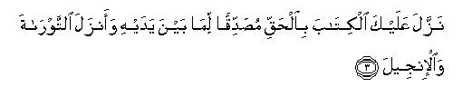
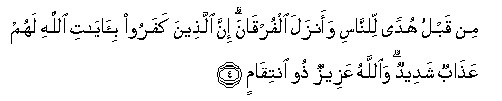
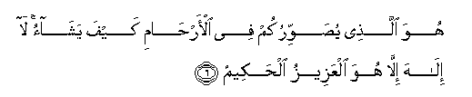
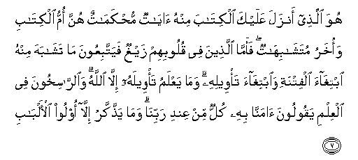
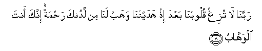
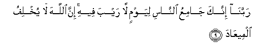

Sacred Texts Islam Index
Hypertext Qur'an Unicode Palmer Pickthall Yusuf Ali English Rodwell
Sūra III.: Āl-i-’Imrān, or The Family of ’Imrān. Index
Previous Next

The Holy Quran, tr. by Yusuf Ali, [1934], at sacred-texts.com
Sūra III.: Āl-i-’Imrān, or The Family of ’Imrān.
Section 1
1. A. L. M.
2. Allahu la ilaha illa huwa alhayyu alqayyoomu
2. God! There is no god
But He,—the Living,
The Self-Subsisting, Eternal.

3. Nazzala AAalayka alkitaba bialhaqqi musaddiqan lima bayna yadayhi waanzala alttawrata waal-injeela
3. It is He Who sent down
To thee (step by step),
In truth, the Book,
Confirming what went before it;
And He sent down the Law
(Of Moses) and the Gospel
(Of Jesus) before this,
As a guide to mankind,
And He sent down the Criterion
(Of judgment between right and wrong).

4. Min qablu hudan lilnnasi waanzala alfurqana inna allatheena kafaroo bi-ayati Allahi lahum AAathabun shadeedun waAllahu AAazeezun thoo intiqamin
4. Then those who reject
Faith in the Signs of God
Will suffer the severest
Penalty, and God
Is Exalted in Might,
Lord of Retribution.
5. Inna Allaha la yakhfa AAalayhi shay-on fee al-ardi wala fee alssama/-i
5. From God, verily
Nothing is hidden
On earth or in the heavens.

6. Huwa allathee yusawwirukum fee al-arhami kayfa yashao la ilaha illa huwa alAAazeezu alhakeemu
6. He it is Who shapes you
In the wombs as He pleases.
There is no god but He,
The Exalted in Might,
The Wise.

7. Huwa allathee anzala AAalayka alkitaba minhu ayatun muhkamatun hunna ommu alkitabi waokharu mutashabihatun faamma allatheena fee quloobihim zayghun fayattabiAAoona ma tashabaha minhu ibtighaa alfitnati waibtighaa ta/weelihi wama yaAAlamu ta/weelahu illa Allahu waalrrasikhoona fee alAAilmi yaqooloona amanna bihi kullun min AAindi rabbina wama yaththakkaru illa oloo al-albabi
7. He it is Who has sent down
To thee the Book:
In it are verses
Basic or fundamental
(Of established meaning);
They are the foundation
Of the Book: others
Are allegorical. But those
In whose hearts is perversity follow
The part thereof that is allegorical,
Seeking discord, and searching
For its hidden meanings,
But ṭo one knows
Its hidden meanings except God.
And those who are firmly grounded
In knowledge say: "We believe
In the Book; the whole of it
Is from our Lord:" and none
Will grasp the Message
Except men of understanding.

8. Rabbana la tuzigh quloobana baAAda ith hadaytana wahab lana min ladunka rahmatan innaka anta alwahhabu
8. "Our Lord!" (they say),
"Let not our hearts deviate
Now after Thou hast guided us,
But grant us mercy
From Thine own Presence;
For Thou art the Grantor
Of bounties without measure.

9. Rabbana innaka jamiAAu alnnasi liyawmin la rayba feehi inna Allaha la yukhlifu almeeAAada
9. "Our Lord! Thou art He
That will gather mankind
Together against a Day about which
There is no doubt; for God
Never fails in His promise."